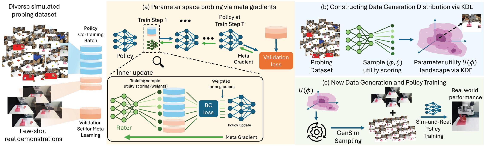
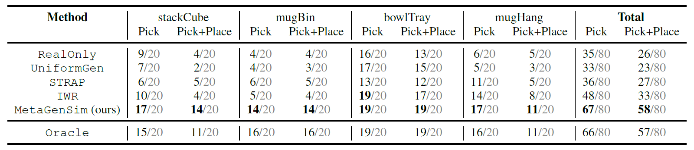
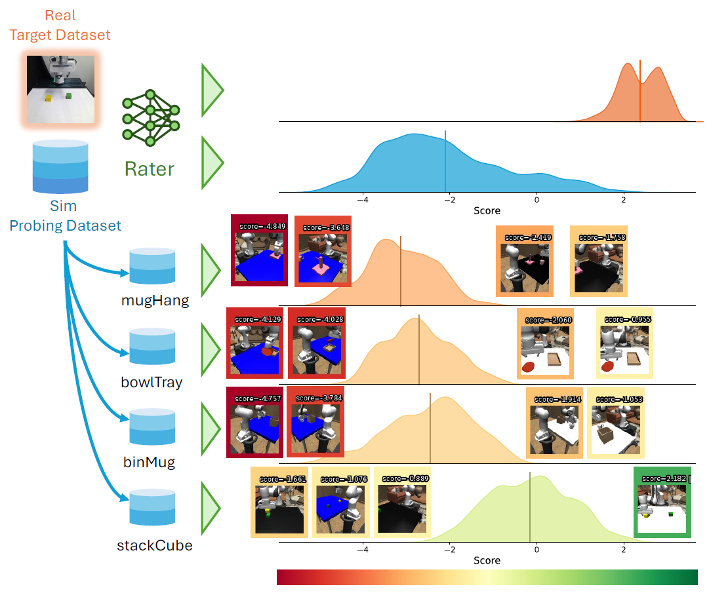
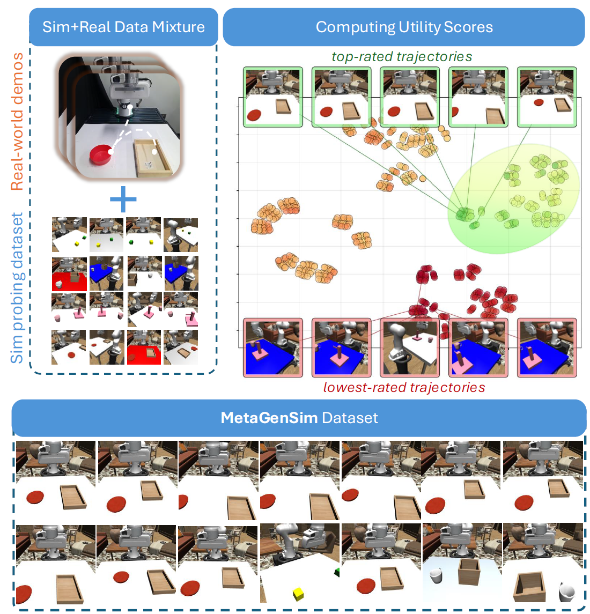

Abstract
Sim-and-real co-training is an effective way to scale robot learning by augmenting limited real-world demonstrations with simulation data. However, existing approaches typically treat simulators as fixed data sources, relying on uniform generation, offline retrieval, or manual parameter alignment by domain experts. We formulate Active Generative Simulation: optimizing a simulator's data-generation distribution to maximize downstream real-world performance. To solve this problem, we propose MetaGenSim, a meta-learning framework that trains an auxiliary rater network via meta-gradients to automatically discover high-utility simulation parameter distributions without human heuristics. Across simulation and real-world manipulation tasks, MetaGenSim outperforms uniform generation and retrieval baselines, achieves a 150% relative improvement in real-world full-task success over uniform generation, and matches expert manual alignment. We further show that distributions curated with a lightweight proxy policy transfer to VLA fine-tuning, and that MetaGenSim can exploit partial alignment through atomic skill stitching and object-receptacle composition when exact sim-and-real task alignment is unavailable.
Method

MetaGenSim operates in three stages. (a) Rater meta-learning: we meta-learn a rater network that weights simulation samples by how much they improve policy performance on a held-out set of real demonstrations, backpropagating meta-gradients through the co-training inner loop. (b) Utility landscape: we map these scores back to their generation parameters and fit a kernel density estimate (KDE) to obtain a utility landscape over the parameter space. (c) Targeted synthesis and co-training: we sample from this distribution to generate a targeted simulation corpus and co-train the final policy on it together with the few-shot real demonstrations.
Meta-Learning the Rater
An animated walkthrough of Algorithm 1. The scores and weights shown are illustrative. Click any line of the algorithm to jump to that step.
Real-World Results

On four real-world manipulation tasks — stackCube, mugBin, bowlTray, and mugHang — with only 10 real demonstrations each, MetaGenSim more than doubles full-task (Pick+Place) success over uniform generation (58/80 vs. 23/80) and matches expert manual alignment (Oracle). Notably, naive uniform simulation data can cause negative transfer, underperforming a policy trained on real data alone.
Real-World Rollouts
Select a task to compare policies co-trained with each data source on the real Franka robot. All videos are played at 5× speed.
RealOnly
UniformGen
MetaGenSim (ours)
Oracle
What Does the Rater Learn?

We visualize the rater's score distribution over the probing dataset for the stackCube target. The rater assigns high utility to simulated samples that match the target task and suppresses misaligned ones. Aligned simulation data can score comparably to real data, indicating that the rater captures target-relevant utility rather than superficial visual similarity.
Automatic Target Alignment
Projecting the high-dimensional generation parameters with t-SNE and coloring by utility, the high-scoring parameters concentrate around the target task's visual and spatial configuration, while low-scoring ones are clearly misaligned. Sampling from the induced distribution yields a large-scale, target-aware simulation dataset for co-training — automatic alignment without hand-tuning generation parameters.
